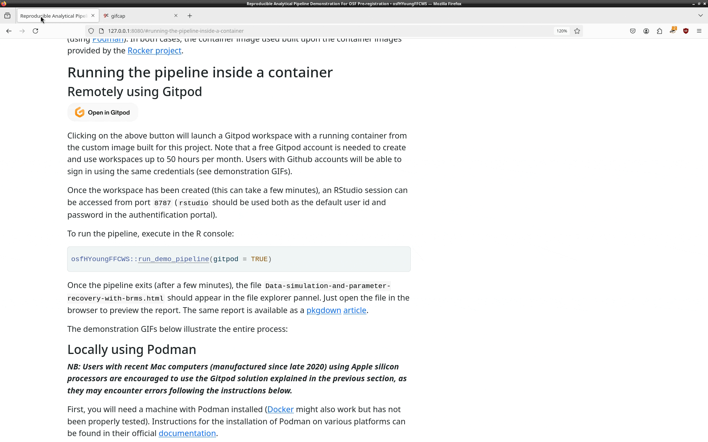

This repository is a companion to an OSF pre-registration. It is organized as an R package and can be installed with:
install.packages("devtools")
devtools::install_github("hugomell/osfHYoungFFCWS", dependencies = FALSE)It provides R code to run a demonstration pipeline that:
simulates fake datasets based on the equations for the three models described in the pre-registration
recovers the simulations’ structural parameters with bayesian estimation using the brms package
generates an HTML report with lavaan syntax for the models used to generate fake data, histograms of the simulated variables, tables and posterior distributions for regression coefficients
The report produced at the end of the pipeline is available as a pkgdown article. on the package’s website.
In the next section, we explain how to run the pipeline in a isolated container with all the required software dependencies already installed, either remotely (using Gitpod), or locally (using Podman). In both cases, the container image used built upon the container images provided by the Rocker project.
Running the pipeline inside a container
Remotely using Gitpod

Clicking on the above button will launch a Gitpod workspace with a running container from the custom image built for this project. Note that a free Gitpod account is needed to create and use workspaces up to 50 hours per month. Users with Github accounts will be able to sign in using the same credentials (see demonstration GIFs).
Once the workspace has been created (this can take a few minutes), an RStudio session can be accessed from port 8787 (rstudio should be used both as the default user id and password in the authentification portal).
To run the pipeline, execute in the R console:
osfHYoungFFCWS::run_demo_pipeline(gitpod = TRUE)Once the pipeline exits (after a few minutes), the file Data-simulation-and-parameter-recovery-with-brms.html should appear in the file explorer pannel. Just open the file in the browser to preview the report. The same report is available as a pkgdown article.
The demonstration GIFs below illustrate the different steps:
Accessing the Gitpod workspace 
Acessing RStudio and running the demonstration pipeline 
View and download the R Markdown report 
Locally using Podman
NB: Users with recent Mac computers (manufactured since late 2020) using Apple silicon processors are encouraged to use the Gitpod solution explained in the previous section, as they may encounter errors following the instructions below.
First, you will need a machine with Podman installed (Docker might also work but has not been properly tested). Instructions for the installation of Podman on various platforms can be found in their official documentation.
As an example, for Debian/Ubuntu linux users or for Windows users that run these linux distributions using Windows Subsystem for Linux, installing Podman is done by running in a terminal:
To run a container from the custom image built for this project, first open a terminal and execute the following command:
This command will pull on the local machine the container image that is hosted on Dockerhub. This step is only necessary the first time we want to run the container.
Once the container image has been pulled, run:
podman run --rm -it -e DISABLE_AUTH=true -p 127.0.0.1:8787:8787 \
-v "$(pwd)":/home/root/project \
"docker.io/ipea7892/osf-hyoung-ffcws:pre-reg"A container will be launched from the image with R, RStudio, Stan and all the required R packages already installed.
On startup, the current directory will be binded to the container so that reading, modifying or adding files to it is allowed. An RStudio server will be launched and to access the associated RStudio session, open a browser at http://localhost:8787.
Now, the pipeline can be run with:
osfHYoungFFCWS::run_demo_pipeline()Once the pipeline exits (after a few minutes), the file Data-simulation-and-parameter-recovery-with-brms.html should have been written to the project directory. Open it in a browser to see the report. The same report is available as a pkgdown article.
To stop the container, press Ctrl-c in the terminal to close the RStudio session and shutdown the RStudio server.
The demonstration GIFs below illustrates the entire process:

Go further
See the Get started as well as the Reference sections for more information on the functions used in the pipeline, and ways to modify the default values for the simulation parameters and the models’ priors.